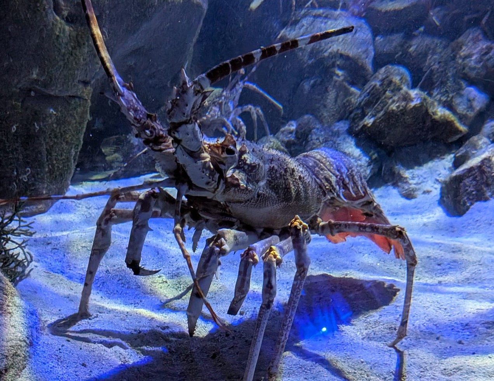

Langouste rose
Palinurus mauritanicus
La langouste rose est un grand crustacé marin reconnaissable à sa coloration rosée et à ses très longues antennes. Elle vit sur les fonds rocheux et se distingue du homard par l'absence de grandes pinces.
Informations scientifiques
| Nom scientifique | Palinurus mauritanicus |
|---|---|
| Nom commun | Langouste rose |
| Famille | Palinuridae |
| Infra-ordre | Achelata |
| Ordre | Decapoda |
| Classe | Malacostraca |
| Habitat | Fonds rocheux et zones profondes, généralement à plusieurs dizaines de mètres. |
| Répartition | Atlantique Est et zones de l'Atlantique oriental correspondant à son aire de répartition. |
| Longueur | Jusqu'à environ 50 cm. |
| Alimentation | Mollusques, crustacés, échinodermes et autres animaux benthiques. |
Description
La langouste rose possède une carapace robuste et de longues antennes qui jouent un rôle important dans l'exploration de son environnement. Sa coloration rosée lui donne son nom commun.
Elle fréquente principalement les fonds rocheux et les zones marines relativement profondes. Elle se nourrit de différents animaux benthiques, notamment de mollusques, de crustacés et d'échinodermes.
À la différence du homard européen, elle ne possède pas de grandes pinces.